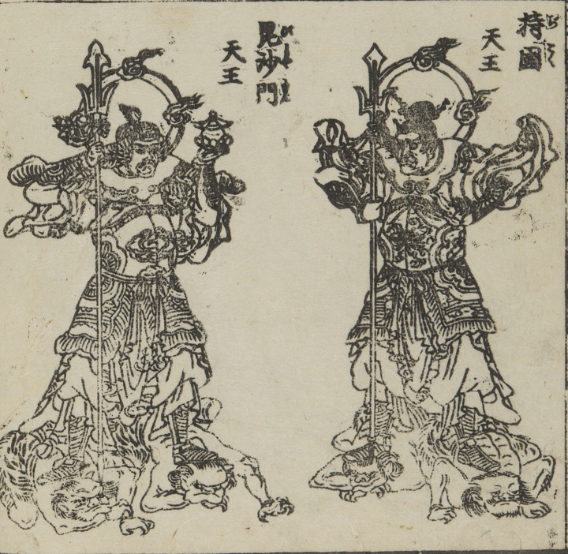

持国天と毘沙門天に背中や頭を踏まれた鬼。上半身は裸で腰布をあて、頭に角が生えている。
著作者：中村惕齋・下河辺拾水／出典：親書誌：U426_nichibunken_0455：頭書増補訓蒙図彙大成；カシラガキゾウホキンモウズイタイセイ／日付：2025／資源識別子：U426_nichibunken_0455_0016_0000
Copyright (c)2010- International Research Center for Japanese Studies, Kyoto, Japan. All rights reserved.